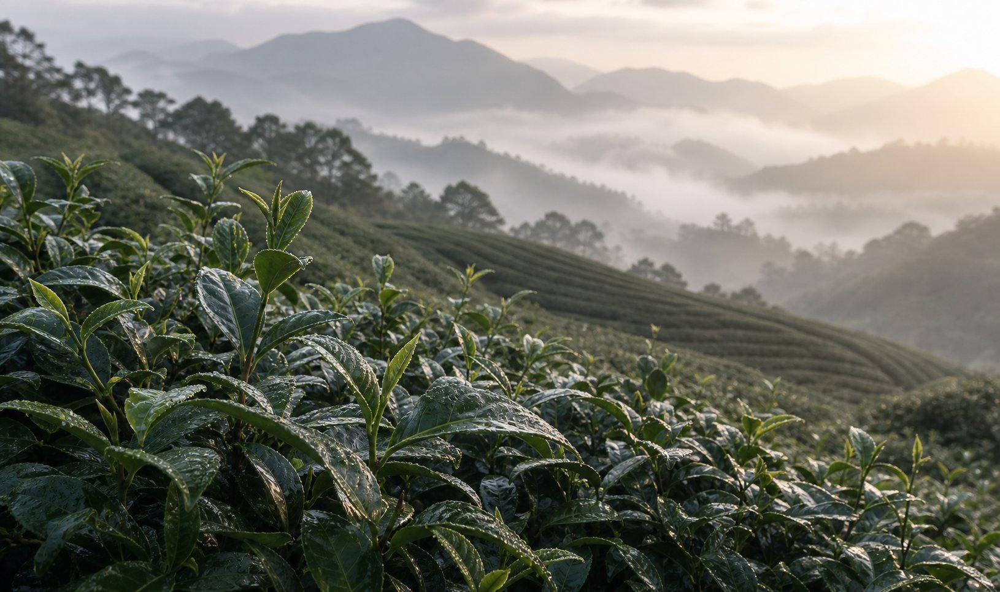

黃金霜雪茶是山嵐茶園特別推薦的私房高山茶。它最鮮明的個性，是茶湯的「濃厚」與「扎實」——入口飽滿、韻味深、層次清楚，喝起來很有份量。
相較於清香型高山茶的輕盈花香，黃金霜雪茶走的是厚實路線，適合喜歡茶湯有重量、喝得到內容的人。想喝點不一樣、有記憶點的茶，這款很值得一試。
黃金霜雪茶最大的特色就是「厚」。茶湯飽滿、內容豐富，入口能感受到層次與重量，韻味在喉間停留得久。這種扎實感，對喝慣清香茶、想換個更有份量口感的人來說，是很過癮的體驗。
如果你平常喜歡茶湯濃一點、喝起來有內容，或想找一款「有個性、好記」的茶來自飲或分享，黃金霜雪茶會很對味。它也是我們在「想喝特別的」情境裡，最常推薦的私房茶之一。
建議用約 95°C 熱水，茶水比約 1 公克對 50 毫升，第一泡約 50～60 秒。茶湯濃厚耐泡，可以慢慢回沖、感受韻味變化；若覺得太濃，第一泡先縮短時間即可。完整方法見沖泡與保存指南。
黃金霜雪茶為私房茶款，供應依當季而定，建議先詢問是否有貨與可訂數量。想看另一款風格相反、走鮮爽清新路線的私房茶，可看冬片；喜歡焙火厚實的話，炭焙烏龍也值得一試。
黃金霜雪茶是山嵐茶園的私房高山茶，特色是茶湯濃厚扎實、韻味飽滿、入口層次明顯，適合喜歡茶湯有份量、喝得到厚度的人。實際產區與批次可詢問。
適合喜歡濃厚、扎實茶湯與明顯韻味的人，也適合想嘗試比一般清香高山茶更有份量的茶款的茶友。
清香高山茶走花香、清爽、順口路線；黃金霜雪茶則茶湯更濃厚扎實、韻味更飽滿。想喝清爽選清香高山茶，想喝有份量選黃金霜雪茶。
建議 95°C 左右熱水，茶水比約 1 公克對 50 毫升，第一泡約 50～60 秒。茶湯濃厚耐泡，可慢慢回沖品味韻味；怕太濃可縮短第一泡時間。
黃金霜雪茶為私房茶款，想確認當季是否有貨，歡迎直接聯絡。
詢問黃金霜雪茶現貨